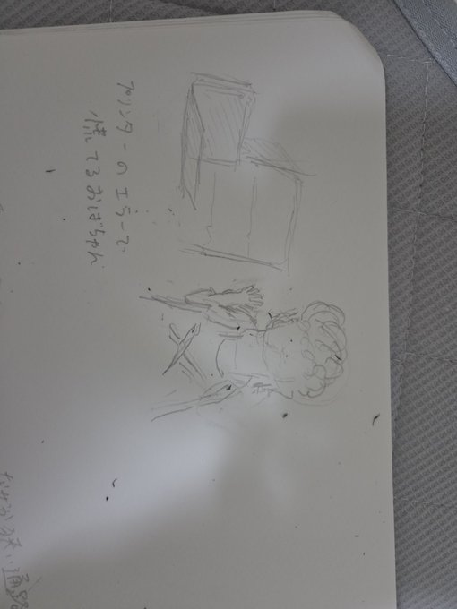
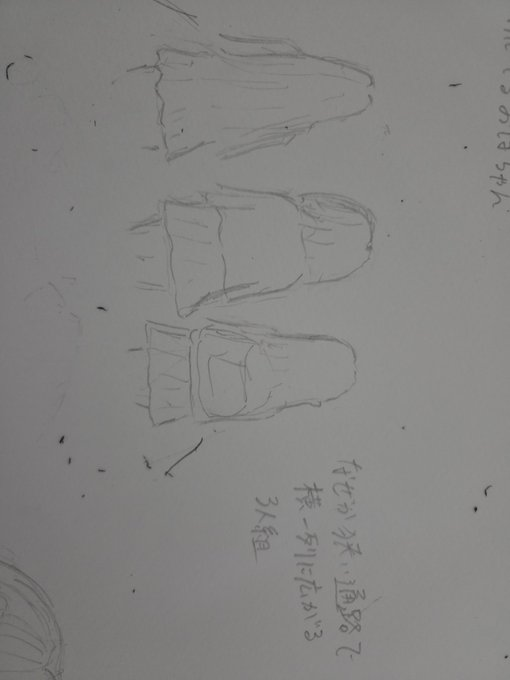
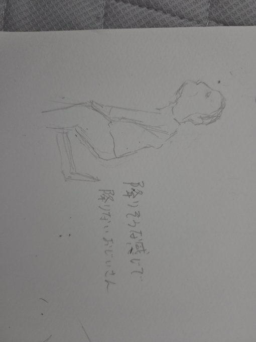
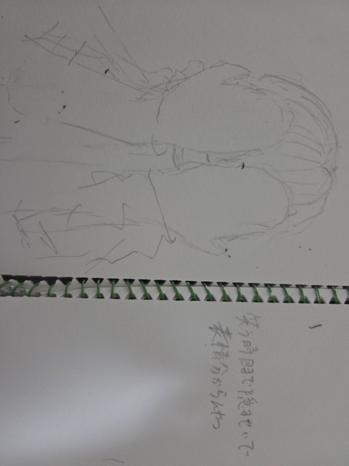
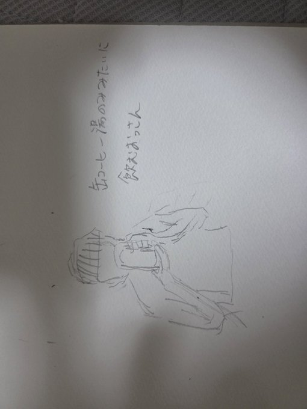
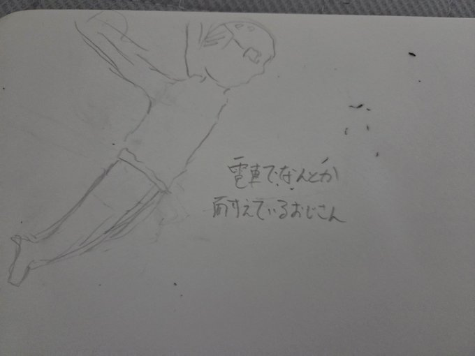
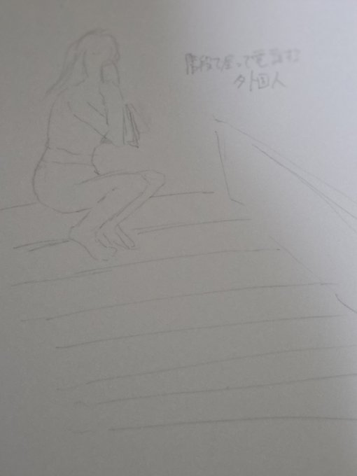

プリンターのエラーであわてるおばちゃん

10月26日
すごいあわてていたが目の前にエラーが出ているときのマニュアルがあった。パニックになると気づけないものだ。
なぜか狭い通路で横一列に広がる3人組

10月27日
抜かしたいけど抜かせない。なぜ縦になって歩かないのだろう。
降りそうな感じで降りないお爺さん

10月28日
一旦立ちそうになった後結局座って前の人をぬか喜びさせる。そのまま終点まで行ったりする。これの前に本しまったりきょろきょろしたりするから余計降りると期待してしまう。
笑うとき目まで隠すせいで表情わからない人

10月29日
口元どころか目まで手が覆いかぶさっているので顔がほとんど見えていない。本人に自覚はなさそうだ。
缶コーヒー湯飲みみたいにして飲むおじさん

10月31日
僕もたまにやる。
電車の揺れで倒れそうなのを何とか耐えるおじさん

11月3日
結構電車が揺れてバランスを崩したおじさん。そのまま倒れたら事案だから頑張れ、おじさん！
階段で電話する外国人

11月4日
海外では普通にやるのかな。人通りが多いので少し心配である。